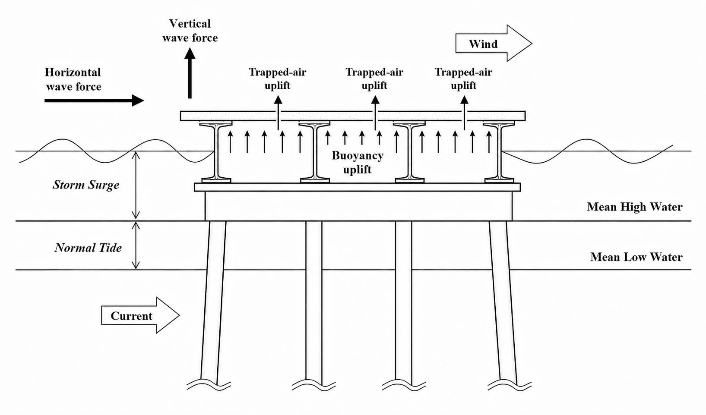
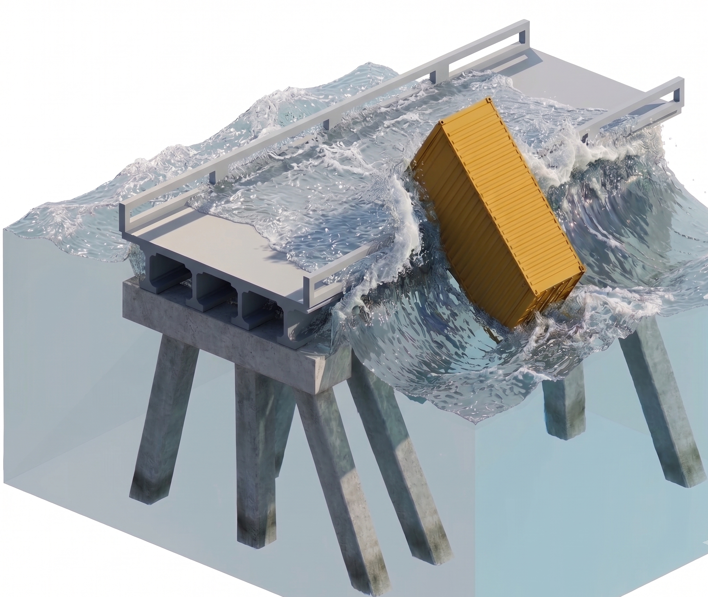
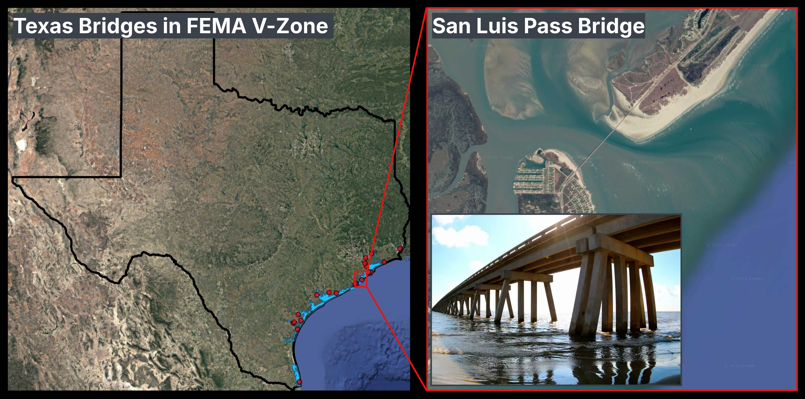
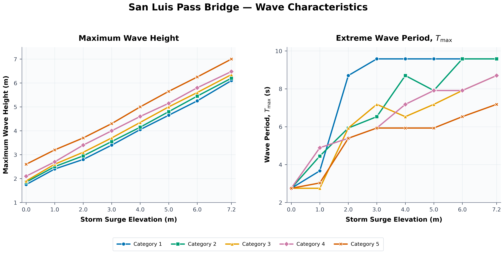
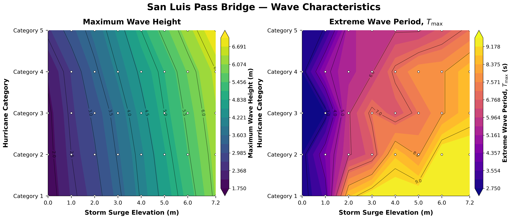
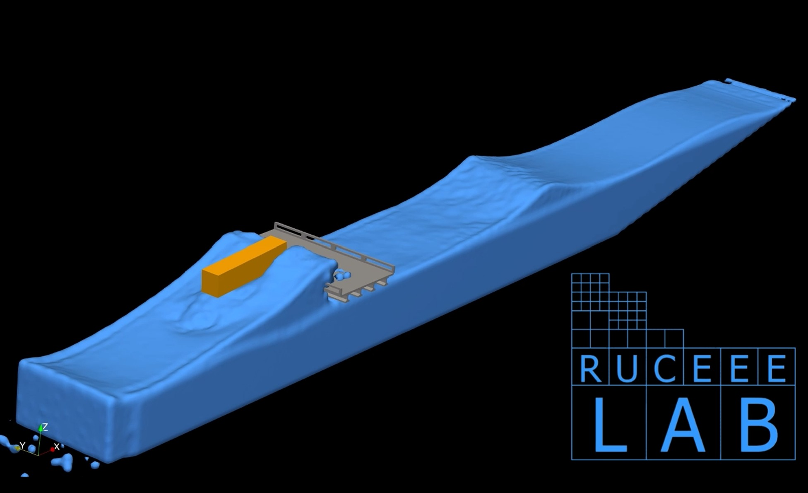
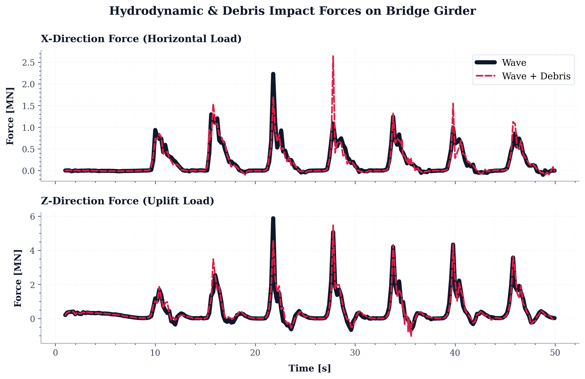

Protecting Critical Coastal Infrastructure
Coastal bridges are essential components of Texas's transportation and emergency-response network. More than 20 bridges along the Texas coast are located on designated hurricane evacuation routes, making their continued operation particularly important before, during, and after major storms.
However, many of these bridges are exposed to a combination of storm surge, intense waves, and floating debris. Damage to a bridge located along an evacuation route can disrupt emergency response, restrict access to coastal communities, delay post-storm recovery, and result in substantial economic losses.
At RUCEEE LAB, in collaboration with faculty and researchers at Texas A&M University's College Station and Galveston campuses, we implemented a high-resolution Smoothed Particle Hydrodynamics (SPH) model to investigate wave–debris–structure interaction and quantify the forces applied to coastal bridge girders during extreme hurricane conditions.
The objective is to provide a physics-based tool that can support the assessment of vulnerable coastal bridges and help engineers understand how multiple hurricane-related hazards act together on bridge superstructures.
The Challenge: Multiple Hazards Acting Together
Girder bridges are primarily designed to withstand downward vertical loads and loads acting along the bridge deck. During a hurricane, however, storm surge can partially or completely submerge the bridge superstructure, introducing loading conditions that are fundamentally different from those experienced during normal operation.
One of the primary concerns is vertical uplift caused by buoyancy. As the surge reaches the bridge deck, the resulting buoyancy force may become comparable to, or even exceed, the dead weight of the girders and deck system. This can increase the risk of unseating, displacement, or structural failure.
In addition to buoyancy, an exposed coastal bridge may experience:
- transverse wave forces acting against the sides of the girders;
- vertical wave forces that further increase the uplift demand;
- wind drag acting on the exposed portions of the bridge;
- uplift generated by high-pressure air trapped between adjacent I-beams; and
- sudden impact forces produced by floating debris transported by the storm surge.
The magnitude of these forces depends on several interacting factors, including hurricane intensity, storm-surge elevation, incident wave height, wave period, local bathymetry, bridge geometry, and the degree to which the bridge is sheltered from direct wave exposure.

Why Floating Debris Matters
Hurricanes can mobilize shipping containers, boats, vehicles, construction materials, and other large objects from nearby ports, industrial areas, and coastal communities. Once transported by the combined action of surge and waves, these objects may collide with bridge girders at substantial velocity.
Unlike the more gradual loading associated with buoyancy, a debris collision can produce a short-duration, high-intensity impact. This concentrated loading may damage individual girders, bearings, connections, or other structural components.
The risk becomes even greater when the debris impact occurs while the bridge is already subjected to strong wave forces, overtopping, and vertical uplift. Therefore, evaluating wave loading without considering the possible presence of floating debris may underestimate the maximum force experienced by an exposed coastal bridge.

Our Physics-Based Modeling Approach
RUCEEE LAB developed a computational framework to simulate the coupled interaction among waves, floating debris, and bridge structures. The simulations were performed using DualSPHysics, a mesh-free computational fluid dynamics model based on the Smoothed Particle Hydrodynamics method.
SPH is particularly suitable for this application because it can represent highly nonlinear free-surface processes, including:
- wave propagation and transformation;
- wave breaking;
- violent water impact;
- overtopping of the bridge deck;
- interaction between water and complex structural geometries; and
- large translational and rotational movements of floating objects.
DualSPHysics was coupled with the Project Chrono multibody dynamics framework to represent the motion and collision of rigid floating debris. This coupled approach allows the numerical model to resolve:
- the propagation of waves toward the bridge;
- wave breaking and overtopping around the girders;
- buoyancy and hydrodynamic loading on the bridge;
- the translation and rotation of floating debris;
- collision between the debris and bridge structure; and
- time-varying horizontal and vertical forces applied to the bridge.
The modeled environmental conditions were informed by previous site-specific assessments of storm-surge elevation, wave height, and wave period for different hurricane categories [1]. Combining these hazard conditions with detailed structural representations makes it possible to evaluate bridge loading across a broad range of plausible extreme events.
From Numerical Simulations to Bridge-Risk Assessment
The broader goal of this work is to support the development of practical tools for assessing coastal bridge vulnerability. The modeling framework can help transportation agencies and engineers:
- evaluate the combined effects of storm surge, waves, and debris impact;
- estimate horizontal, vertical, and impact forces on bridge girders;
- identify the storm conditions under which overtopping and critical uplift begin;
- compare the vulnerability of different bridge configurations;
- map the relative risk of coastal bridges subjected to different hurricane scenarios;
- prioritize detailed inspection, strengthening, or retrofit efforts; and
- support the implementation and evaluation of coastal bridge-design methodologies developed through AASHTO and FHWA studies.
This approach can contribute to the development of a bridge-vulnerability map for structures located within FEMA coastal V Zones and along critical hurricane evacuation routes.
San Luis Pass Bridge Case Study
The San Luis Pass Bridge was selected as a representative case study because of its exposed coastal location. The bridge connects Galveston Island with Follet's Island and lies within FEMA's coastal V Zone, where structures may be subjected to storm surge, high-velocity wave action, and wave-induced impact.
Its relatively unsheltered position makes the bridge vulnerable to several interacting hazards during a hurricane, including surge-induced buoyancy, wave impact, overtopping, trapped-air pressure, and floating debris.
The representative bridge section modeled in this study consists of four approximately 40-inch-deep Type C I-beams. The modeled bridge superstructure is approximately 10.2 m wide.

Representing a Range of Hurricane Conditions
The numerical study considered multiple combinations of hurricane category and storm-surge elevation. For each condition, the corresponding wave height and wave period were used to define the incident wave field approaching the bridge.
The adopted wave conditions were based on the results of previous site-specific coastal hazard assessments [1]. These data provide a consistent relationship among hurricane category, surge elevation, wave height, and wave period.


Rather than evaluating the bridge under only one design condition, this framework can be applied across a wide range of possible extreme events. The resulting simulations can reveal how structural loading changes as the hurricane becomes more intense and as the water level rises relative to the bridge deck.
The simulations can also help identify when overtopping begins, when buoyancy and vertical wave loading and air pocket phenomena become critical, and when floating debris causes a substantial increase in the peak force applied to the bridge.
Extreme Category 5 Scenario
One of the modeled cases represents an extreme Category 5 hurricane with a storm-surge elevation of approximately 5 m and an incident wave height of approximately 6.2 m.
Two simulations were conducted using the same wave and storm-surge conditions:
- a wave-only case without floating debris; and
- a combined wave-and-debris case involving a floating shipping container.
The shipping container was represented as a rigid floating body with an effective density of approximately 400 kg/m3, while the seawater density was specified as approximately 1010 kg/m3.
The simulation captures the intense interaction among the 6.2 m wave, the floating container, and the bridge superstructure. As the wave approaches the bridge, water overtops the girder system while simultaneously transporting the container toward the structure.

How Debris Changes the Applied Force
The time-dependent forces applied to the bridge were recorded for both the wave-only and wave-with-debris simulations. Comparing the two cases isolates the additional loading generated by the debris collision.
In the wave-only case, the force varies according to the arrival and interaction of the incident wave with the girder system. When the floating container is included, an additional sharp force peak appears at the moment of impact.
This short-duration peak is associated with the rapid deceleration of the container as it collides with the bridge. Although the impact occurs over a relatively short interval, its magnitude may be substantial. When combined with buoyancy, vertical wave loading, overtopping, and transverse hydrodynamic forces, the debris impact may significantly increase the demand placed on the bridge superstructure.

These results demonstrate why debris impact should be considered as part of a multi-hazard coastal bridge assessment. A structure that remains stable under wave loading alone may experience considerably higher localized demand when a large floating object strikes the girder system.
Supporting More Resilient Coastal Bridges
The San Luis Pass Bridge case study demonstrates how high-resolution physics-based modeling can be used to evaluate loading conditions that are difficult and costly to reproduce experimentally at full scale.
RUCEEE LAB is committed to translating advanced computational modeling into practical resilience tools for communities, infrastructure owners, and transportation agencies.
Through collaboration with researchers and engineers, we aim to extend this framework to additional bridge configurations and coastal locations. The long-term objective is to help identify vulnerable infrastructure before the next major hurricane and provide the technical evidence needed to prioritize effective mitigation and adaptation measures.
References
- Jin, J., et al. (2010). Site Specific Wave Parameters For Texas Coastal Bridges, Texas Transportation Institute The Texas A&M University System